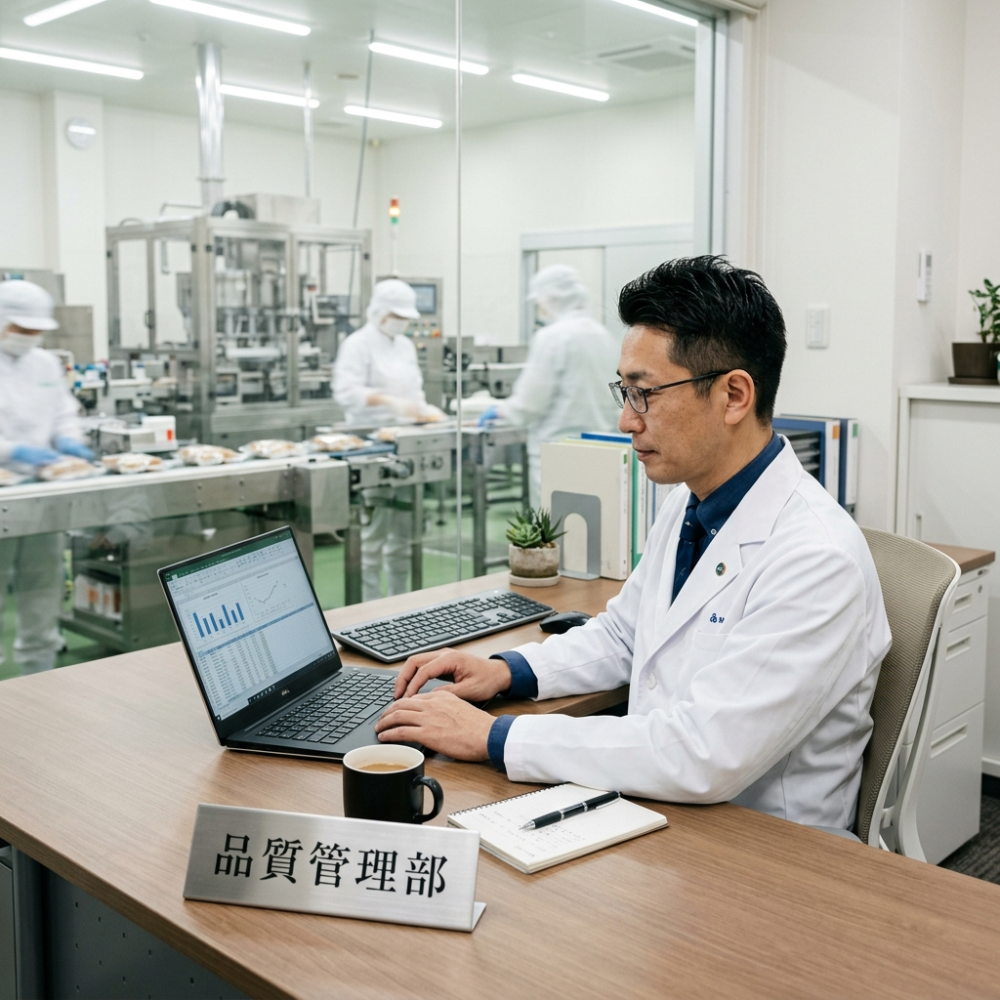

JFS-B取得費用の相場は？審査・コンサル料金の比較と、経営者が知っておくべき補助金活用術

取引先から「JFS-B規格の適合証明を取ってほしい」と言われたものの、「一体いくらかかるのか、相場がまったく分からない」——そんな不安を感じている経営者の方は少なくありません。
ISO22000やFSSC22000といった国際認証と比べると、JFS-Bは日本発の規格であり比較的取り組みやすいのが特長です。しかし、費用体系が分かりにくく、見積もりの妥当性を判断できないまま契約してしまうケースも散見されます。
本コラムでは、JFS-B取得にかかる費用の「内訳と相場」を明確にし、過去3年（2023〜2025年）の補助金・助成金の具体的な活用事例を交えながら、経営者が「損をしない」ための比較・検討のコツをお伝えします。
1. JFS-B取得費用の「2大要素」を理解する
JFS-B規格の取得にかかる費用は、大きく分けて「監査費用（審査料金）」と「コンサルティング費用」の2階建て構造です。この2つの違いを理解しないまま見積もりを見ても、高いのか安いのか判断できません。
| 費用項目 | 支払先 | 相場目安 | 備考 |
|---|---|---|---|
| 監査費用（審査料金） | JFS登録監査会社 | 約25万〜40万円 | 施設規模・品目数・リスクで変動 |
| コンサルティング費用 | コンサルタント会社 | 約15万〜100万円超 | サポート範囲で大きく変動 |
| 合計の目安 | — | 約40万〜140万円 | ＋交通費・宿泊費等の実費 |
監査費用は「審査そのもの」の料金であり、監査会社ごとに大きな差はありません（人日数×単価で算出）。費用に差がつくのは、圧倒的に「コンサルティング費用」の部分です。 マニュアル作成代行だけなのか、現場改善まで伴走するのかで、数十万円の差が生まれます。
2. 監査費用（審査料金）の中身を知る
監査費用は、JFSM（一般財団法人 食品安全マネジメント協会）に登録された監査会社が行う「適合証明審査」の料金です。以下の要素で金額が決まります。
- 監査工数（人・日）：施設の規模（従業員数・製造ライン数）とHACCPシステム数で算出。小規模なら1〜1.5日、中規模で2〜3日が目安。
- リスクカテゴリ：取り扱う食品のリスク（生食用の鮮魚と、常温保存の乾菓子では当然異なる）。
- 交通費・宿泊費：見積もりに含まれていないことが多い。遠方の監査機関を選ぶと実費が膨らむため、近隣の監査会社を選ぶのも一つの戦略。
JFSM公式サイトには登録監査会社の一覧が掲載されています。まずはここで候補をリストアップし、最低3社から見積もりを取ることを強くお勧めします。
3. コンサルティング費用——「何をどこまで頼むか」で変わる
コンサルティング費用は、自社がどこまで自力で構築できるかによって大きく異なります。以下に3つの典型的なパターンをまとめました。
| パターン | 内容 | 費用目安 |
|---|---|---|
| A. フルサポート型 | ハザード分析〜マニュアル作成〜現場改善〜模擬監査まで一貫支援 | 80万〜150万円 |
| B. ポイント支援型 | ハザード分析・CCP設定など専門性の高い部分のみ支援。マニュアルは自社作成 | 30万〜60万円 |
| C. セルフ＋レビュー型 | 自社で構築し、完成書類をコンサルがレビュー・修正指導 | 15万〜30万円 |
コンサル費用を極端に削ると、書類は揃っても「現場が動かないシステム」になりがちです。結果として監査で不適合が出たり、形骸化して取引先の二者監査で指摘を受けるケースが少なくありません。「取得して終わり」ではなく「運用できるシステム」を作れるかどうかが、コンサル選びの最重要基準です。
4. 他の認証規格との費用比較
「JFS-Bは高いのか？安いのか？」を判断するために、他の主要規格と比較してみましょう。
| 規格 | 審査費用の目安 | コンサル費用の目安 | 合計の目安 |
|---|---|---|---|
| JFS-B（適合証明） | 25万〜40万円 | 15万〜100万円超 | 40万〜140万円 |
| ISO22000 | 60万〜80万円 | 80万〜200万円 | 140万〜280万円 |
| FSSC22000 | 80万〜100万円超 | 100万〜300万円 | 180万〜400万円 |
| → JFS-Bは国際認証の 1/2〜1/3 のコストで取り組める | |||
JFS-Bは「国内の取引先が求める水準を、現実的なコストで満たせる」という点で、中小企業にとって最もコストパフォーマンスの高い選択肢と言えます。
5. 過去3年（2023〜2025年）の補助金・助成金 活用事例
JFS-Bの取得費用は「コスト」ではなく「投資」です。そしてその投資額を大きく抑えられる公的支援制度が複数存在します。ここでは、過去3年間に食品事業者が実際に活用してきた主な制度を紹介します。
① 食品産業の輸出向けHACCP等対応施設整備事業（農林水産省）
概要：輸出拡大を目指す食品事業者向けに、工場の新設・改修・設備導入費用を最大1/2補助（上限5億円）。JFS-B/Cの取得に必要な施設改善も対象。
活用例：床・壁のドライ化工事、パーテーション設置、温度管理機器の導入など。コンサルティング費を含む「効果促進事業」もセットで申請可能。
ポイント：輸出事業計画との連動が必須。都道府県の農政部門が窓口。2023〜2025年にかけて毎年度公募あり。
② IT導入補助金（経済産業省 / 中小企業庁）
概要：クラウド型HACCP管理システムやIoT温度センサーなど、ITツールの導入費用を補助。
活用例：紙の記録台帳をクラウドシステムに置き換え、日々の記録作業を月20〜30時間削減。監査時の書類準備も大幅に短縮。
ポイント：対象ツールが事前に「IT導入支援事業者」として登録されている必要あり。年度ごとに公募枠と補助率が変動。
③ 人材開発支援助成金（厚生労働省）
概要：従業員にHACCPやJFS-B関連の研修を受講させる際、受講料の一部に加え、「訓練中の賃金」も助成される制度。中小企業の方が助成率が高い。
活用例：HACCP責任者養成講座（2日間）を3名に受講させた場合、受講料＋賃金で約20〜30万円の助成を受けた事例あり。
ポイント：訓練開始1か月前までに管轄の労働局へ「訓練実施計画届」を提出する必要あり。社労士への相談推奨。2025年度は賃金助成額の引き上げも。
④ 小規模事業者持続化補助金 / ものづくり補助金
概要：販路開拓や生産性向上を目的とした設備投資・改善に活用可能。JFS-B取得に伴う機器導入や、専門家指導費用に充当する事例も。
活用例：異物混入防止のための金属検出機導入（持続化補助金）、生産ライン改善とセットでのJFS-B取得（ものづくり補助金）。
ポイント：「なぜこの投資が売上拡大につながるのか」という事業計画の説得力が採択のカギ。商工会議所・認定支援機関への事前相談が必須。
⑤ JFSM取得サポート事業（食品安全マネジメント協会）
概要：JFS規格の普及促進を目的に、監査費用の一部を支援するモデル事業等を不定期で実施。
ポイント：公募期間が限られるため、JFSM公式サイトを定期的にチェック。
補助金・助成金は年度ごとに名称・補助率・公募期間が変更されます。本記事の情報は2025年度時点のものです。申請前に必ず最新の公募要領を確認し、窓口（労働局、商工会議所、農政部門等）に事前相談してください。
6. 「適正な相場」を見極める3つのステップ
費用の内訳と補助金制度を把握したところで、最も重要な実践ステップです。「うちの規模だと、実際いくらが妥当なのか？」を知るための行動を3つにまとめました。
JFSM公式サイトで監査会社をリストアップ
JFSMの登録監査会社一覧から、自社のエリア・対象食品カテゴリに対応できる会社を3社以上ピックアップ。近隣の会社を優先すると交通費を抑えられます。
「相見積もり」で比較する（最低3社）
監査費用・コンサル費用ともに、必ず3社以上に同条件で見積もりを依頼。比較する際は「単価の安さ」だけでなく、「サポート範囲・コンサルの実績・監査後のフォロー体制」を重視してください。
補助金・助成金の「併用」を検討する
設備投資にはHACCPハード事業やものづくり補助金、研修費用には人材開発支援助成金、IT化にはIT導入補助金——目的別に異なる制度を組み合わせることで、自己負担を大幅に圧縮できます。
7. 費用を「投資」に変える経営者の視点
最後に、経営者として持っておいていただきたい視点をお伝えします。
JFS-Bの取得費用を「コスト（経費）」と見るか、「投資」と見るかで、判断はまったく変わります。
- 取引先の拡大：JFS-Bの適合証明を持つことで、大手小売・メーカーとの新規取引の門戸が開かれます。1件の新規取引が年間数百万〜数千万円の売上につながるケースは珍しくありません。
- 二者監査の工数削減：認証を保有していると、取引先による工場監査（二者監査）が簡略化・免除される場合があり、対応コストが大幅に減少します。
- 従業員の意識改革：取得プロセスを通じて従業員の食品安全に対する意識が向上し、クレーム発生率の低下や業務の標準化につながります。
- 経営の見える化：ハザード分析やPRP（前提条件プログラム）の整備を通じて、これまで「暗黙知」だった現場のノウハウが「マニュアル」として明文化されます。
JFS-B取得に仮に100万円かかったとしても、新規取引が1件増えれば初年度で十分に回収できることが多いです。さらに補助金を活用すれば、自己負担は50万円以下に抑えられるケースもあります。「費用」ではなく「回収できる投資」として計画を立てることが、経営判断のカギです。
まとめ：正しい情報を持ち、賢く投資する
JFS-B取得費用の相場は、監査費用25〜40万円＋コンサル費用15〜100万円超が目安です。しかし、補助金・助成金を正しく活用すれば、自己負担を大幅に圧縮できます。
重要なのは、「相場を知らないまま契約しない」「相見積もりで適正価格を確認する」「補助金を併用して自己負担を最小化する」という3つの原則です。
食品安全パートナーズでは、JFS-B規格の取得費用に関する無料相談を受け付けています。「うちの規模だとどのくらいかかるのか？」「どの補助金が使えるのか？」など、具体的なご質問にお答えします。
補助金を活用して、実質負担を減らしたい方へ
食品安全のプロが、最適な補助金の選定から事業計画の策定まで「完全無料」でサポートします。（※本気で取得を目指す企業様限定）
無料の補助金申請サポートについて見る →また、まだJFS-Bの検討段階で「そもそも自社のHACCPレベルがどの程度か知りたい」という方は、まず無料の診断アプリをお試しください。
▶ 関連コラム：HACCP義務化、中小企業は何からすればいい？現役コンサルが解説
まずは自社の現在地を知ることから
現役審査員が設計した「10問のHACCP診断アプリ」で、自社の管理レベルと弱点を今すぐ可視化。
※公式メルマガ登録者限定の『無料特典』としてすぐにご利用いただけます。